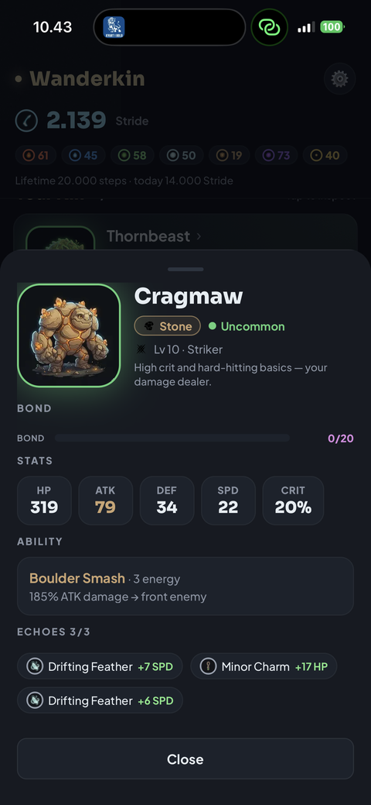
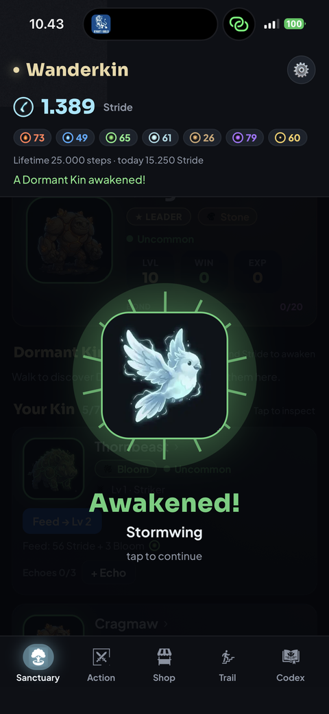
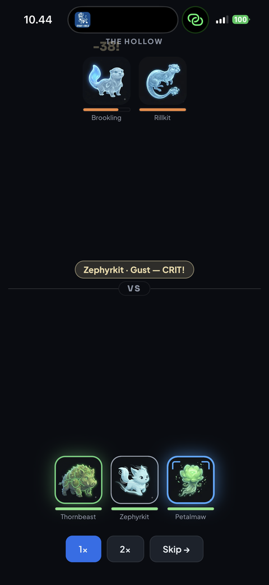
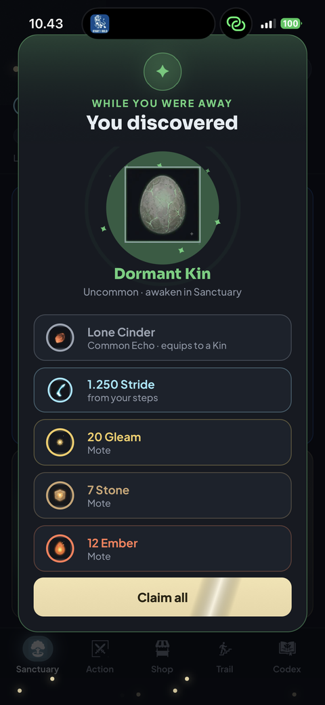
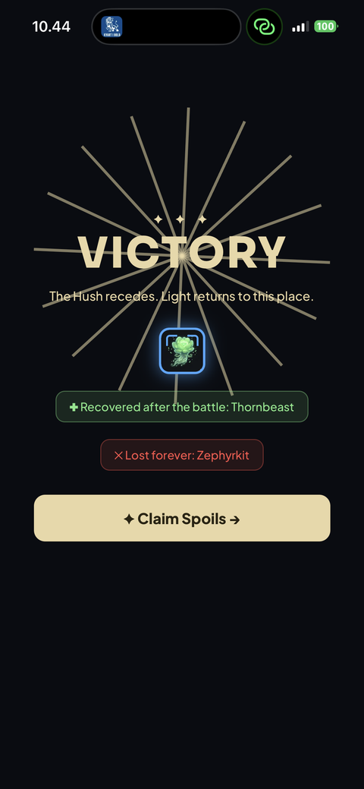

The Game
A cozy creature-collector powered by your real-world steps — what it is, how a session flows, and then every system that decides a battle.
What is Wanderkin?
You are the Warden of a Sanctuary — a refuge for spirit-beasts called Kin. As you go about your day, your real-world steps become Stride: a kinetic light that gathers elemental Motes, hatches dormant Kin from their eggs, and turns up rare relics. You raise the Kin you collect, assemble a team of six, and send them into automatic battles to push back the grey Hush that has settled over the world.
Crucially, the game keeps pace with you. The more you walk, the more you gather — so a longer walk simply means more to enjoy when you next sit down. There are no purchases, no timers, and no pressure to open the app; it's a companion to the walking you'd do anyway.



The loop
Everything in Wanderkin feeds back on itself. One turn of the loop looks like this:
- Walk
Steps become Stride. Your real-world movement fills your Stride — the energy that powers everything. No grinding, no waiting on timers. - Collect
Hatch & gather. Spend Stride to crack open eggs and awaken new Kin, gather elemental Motes, and turn up Echo relics. More steps, more loot. - Raise
Grow your Kin. Level, evolve, and bond with them, and equip Echoes to shape how each one fights. - Build
Pick your six. Assemble a team that balances classes, an element core, positioning, and relics — the craft this page is mostly about. - Battle
You plan, they fight. Send your team into auto-resolved battles against the Hush. Winning earns more Stride, Motes, Echoes, and Kin… - Repeat, at your pace
…which feeds straight back in. Sessions are a few minutes — open, collect what your walk earned, raise and plan, run a fight, close. A daily check-in gives a baseline even on rest days.
The four classes
Every Kin has a calling — a class that shapes how it behaves in a fight. A great team isn't six of the strongest Kin; it's the right blend of these four.
Vanguard The wall
Your front-line guardian. A Vanguard plants itself before the others and pulls the enemy's attention onto itself, so the blows meant for your fragile Kin land on the one built to take them. It also shrugs off a portion of every hit. A team without a Vanguard is a team whose back line gets picked apart.
Striker The blade
Your damage. Strikers hit harder with their ordinary attacks and land critical blows more often. They're how you actually finish enemies off — but they're not built to be hit, so they want a Vanguard standing between them and the enemy.
Warder The lifeline
Your support. When a Warder heals or shields an ally, it does so far more generously than anyone else could. One good Warder can keep a battered team standing long enough to turn a losing fight around. On its own it can't win — but paired with the rest, it makes a team that refuses to fall.
Mystic The spellweaver
Your caster. Mystics cast their signature abilities both harder and more often than other Kin, because they gather power faster. When you want devastating special abilities going off again and again, you want a Mystic.

Abilities & energy
Each Kin brings three things to a fight.
The basic attack
Its everyday strike — what it does whenever it hasn't yet saved up for something greater.
The signature ability
The special move you'll recognize each Kin by — a heavy blow, a sweeping attack that hits the whole enemy line, a healing surge, a protective shield. These cost energy, and here's the heart of it: every Kin gathers a little energy each moment of battle, and the instant it has enough, it unleashes its signature, then starts charging again. Heavier abilities take longer to come around; cheaper ones fire often. Mystics charge faster than anyone — and certain relics can speed any Kin's charge.
The passive
An ever-present trait that needs no energy. Some awaken the moment battle begins — a burst of speed, a rallying buff to the whole team. Others answer grief: a Kin that grows fiercer each time an ally falls. You don't trigger these; they simply happen, so factor them into who you bring.
The battle line: positioning & targeting
Your six Kin stand in two rows — a front line and a back line — and where a Kin stands matters as much as how strong it is.
Most attacks crash into the front. This is why your Vanguard belongs up front: while it stands, it draws those blows onto itself, sparing the Kin behind. Put your fragile Strikers and Mystics in the back, sheltered.
But the back is not a perfect hiding place. Some abilities are built to reach past the front line, and some Kin are deadly snipers, always hunting the single most wounded enemy to finish it off — slipping right past any guardian. Sweeping abilities hit everyone on the enemy side at once. So a clever opponent can punish a back line you thought was safe — and you can do the same to them.
Healers and shielders think differently: they tend the ally who needs it most — the one hurt worst relative to their strength — rather than wasting care on someone barely scratched.
Echoes — the relics you equip
Echoes are relics you slot onto your Kin to make them stronger. Each Kin can carry up to three, so choose with intent.
Some echoes simply raise a Kin's numbers — more health, attack, defense, or sharper critical hits. Others grant genuinely new behaviour in battle, and these are where teams get their character:
- Lifesteal — heal the attacker for part of the damage it deals.
- Thorns — turn an attacker's own blow back on it.
- Regeneration — mend a little health every moment of the fight.
- Opening shield — start the battle already protected by a barrier.
- Piercing — cut through a portion of the enemy's defenses.
- Execute — strike far harder against badly wounded foes.
- First strike — hit harder on a Kin's very first action.
- Quickening — gather energy faster, so signatures fire sooner.
- Element focus — deal extra damage when you already hold the type advantage.
Echoes also come in families. Equip two or three of a kind on the same Kin and they harmonize, unlocking an extra bonus on top — a reward for building a Kin around a theme rather than scattering odds and ends.
Elements & advantage
Every Kin belongs to one of seven elements, and they answer to a wheel:
Ember → Bloom → Gale → Stone → Tide → Ember
each is strong against the next in the ring · Gleam and Gloom stand opposed, each fierce against the other.
When a Kin strikes a foe it holds advantage over, it deals roughly a third more damage. It's a meaningful edge for tilting a close fight your way — but it's deliberately gentle, so a battle is never decided by type alone. Don't build your whole team to counter one opponent; build a team that's strong on its own terms.
Element synergy — the heart of a great team
When you field several different Kin of the same element, they draw strength from one another and all hit harder. The more distinct same-element Kin you bring, the bigger the boost — a full core of four different Kin of one element grants a hefty attack bonus to them all.
Note the word distinct: it's the variety that matters, not duplicates. Four different Ember Kin form a roaring core; four copies of the same one do not. As your collection grows, the path to power is to deepen a single element into a true core — that shared bonus will outweigh almost anything else.
A Warden's checklist for a strong team
- Build an element core. Gather several different Kin of one element — your biggest source of strength.
- Blend the classes. A Vanguard to hold the line, a Warder to keep them standing, Strikers and Mystics to deal the damage.
- Mind the rows. Tanks in front; fragile damage-dealers in back — but remember the back can still be reached.
- Equip with purpose. Three echoes per Kin; lean into a family for the harmony bonus, and match relics to a Kin's role.
- Use matchups to tip close fights — a welcome edge, never your whole plan.

Raise them well, Warden. The world is waiting to wake.